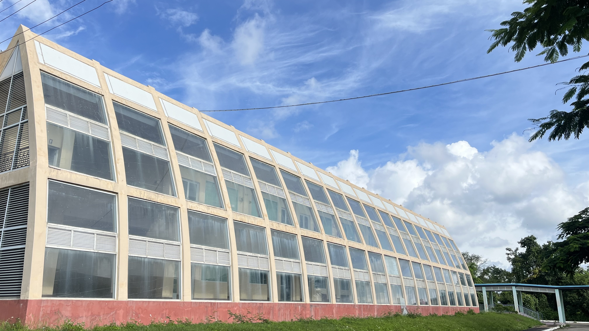

This is a placeholder for the major description. The JavaScript will update this content dynamically.

"Create the Modern World with the outstanding Computer Engineers"
ICT နယ်ပယ်တွင် ကျွမ်းကျင်ပြီး စွမ်းဆောင်ရည်ပြည့်ဝသည့်
တီထွင်ဆန်းသစ်နိုင်သော အင်ဂျင်နီယာများ ဖော်ဆောင်ပေးရန်။
ခက်ခဲသည့် ပြဿနာများကို ဖြေရှင်းနိုင်သော သင်ယူမှု
အဆက်မပြတ်ဆောင်ရွက်နိုင်သော လူ့စွမ်းအားများ ဖန်တီးပေးရန်။
စက်မှုလုပ်ငန်းနှင့် လူမှုအသိုင်းအဝိုင်း၏ လိုအပ်ချက်များ ဖြေရှင်းနိုင်ရန်
ကွန်ပျူတာအင်ဂျင်နီယာနယ်ပယ်တွင် နည်းပညာသစ်များနှင့် ပစ္စည်းကိရိယာများ
ပံ့ပိုးပေးရန်။
ICT ကို အသုံးချသည့် သင်ယူမှုပတ်ဝန်းကျင် တွင် အခွင့်အလမ်းများ ပေးရန်။
စသည်တို့ ဖြစ်ပါသည်။
ထို့အပြင် တက်ရောက်လေ့လာမည့် ကျောင်းသား/သူများအား မိမိတို့ အထူးပြုသည့်
ဘာသာရပ်များတွင် ကျွမ်းကျင်စေရန် နှင့် တီထွင်ဆန်းသစ်သော သိပ္ပံသုတေသနများ
ဆောင်ရွက်ခြင်းတို့ကို လုပ်ဆောင်နိုင်ရန် လေ့ကျင့်သင်ကြားပေးမည်
ဖြစ်ပါသည်။
CE ဘာသာရပ်သင်တန်းသည် ကျောင်းသား/သူများကို နည်းပညာပိုင်းတွင် အခြေခံပညာမှ
စ၍ သုတေသနနှင့် လက်တွေ့ကျကျ အဆင့်မြင့်ပညာရရှိစေရန် ရည်ရွယ်ထားပြီး
အဓိကလေ့လာရမည့် အကြောင်းအရာများမှာ အောက်ပါအတိုင်းဖြစ်ပါသည်။
CE major တွင် သီအိုရီနဲ့ လက်တွေ့ကျကျ လေ့လာမှုများမှတစ်ဆင့် နည်းပညာများကို ကျွမ်းကျင်စေရန် —
Hover over or tap a skill to see a brief description.
Our Bachelor of Engineering curriculum is designed to prepare you for the real world with these key advantages.
B.E. Computer Engineering ဘွဲ့ရရှိသူများသည် IT & Telecom Companies, Hardware Manufacturing Companies, Robotics & Automation Firms, Embedded Systems Startups, Government Technology Departments, Telecommunications စသည်တို့တွင် —